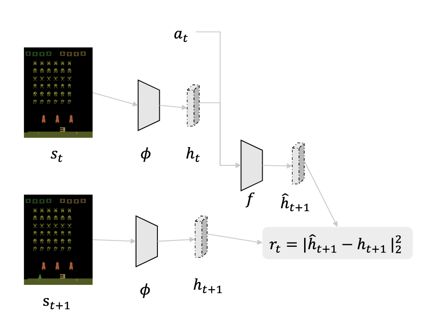
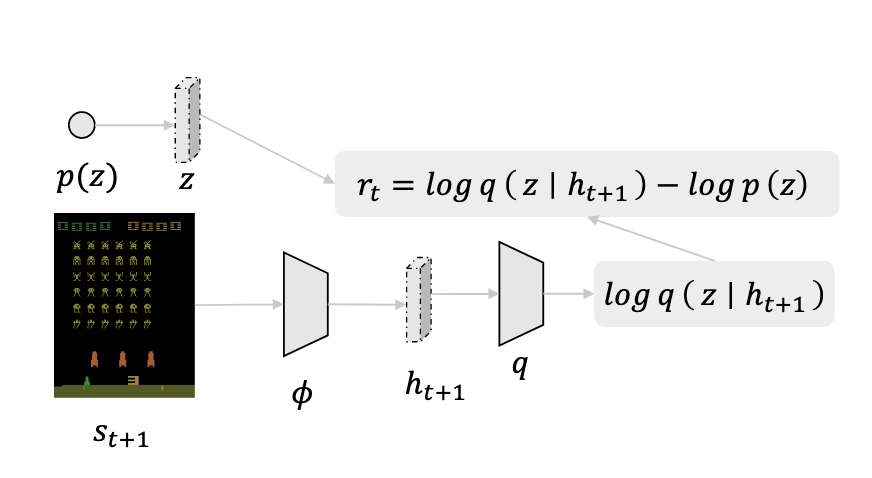
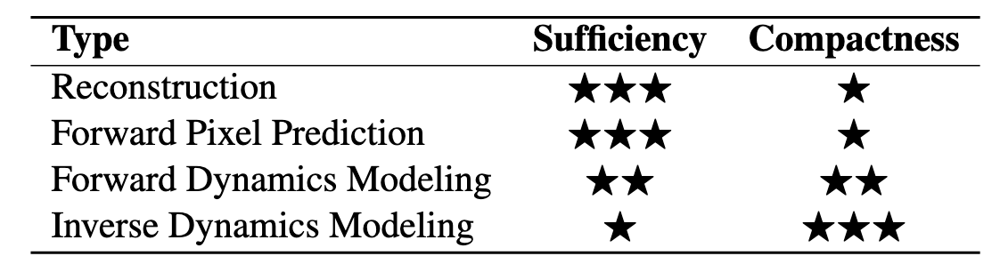

1.强化学习预训练综述
总述¶
强化学习面临两个主要问题，样本效率低下和泛化能力不足。如果RL能够像人类一样，从之前的类似任务中汲取动作模式， 而非从头从头开始学交互，效率会大大提高。然而，大规模预训练(large-scale pretraining)在RL中，并不像在NLP和CV中效果那么好。
总的来说，有三点从RL本质出发的困难在制约强化学习的预训练：
- 任务和领域的多样性
- 有限的数据来源，这个是scale up的瓶颈
- 对下游任务难以快速适应
预备知识¶
强化学习¶
强化学习，是要学习一个策略，要在前提条件：该策略，转移函数以及初始状态分布下，maximize所有时间步的折扣奖励之和。
预训练¶
预训练的目标是，学到能够迁移的知识，来促进做下游任务。到RL的预训练这块，可迁移的知识意味着
- 一些好的representation，比如好的state space，能够让agent更准确，深度地感知这个世界。
- 一些好的reusable skills，比如好的action space，让agent根据给定任务，快速搭建复杂的行为。
这篇文章专注于无监督预训练，在这种模式下，预训练阶段没有针对具体任务的奖励信号，但智能体仍然可以通过online实时互动、 无标签的历史数据、或其他不同类型（模态）的非任务相关数据来进行学习。我们忽略了有监督预训练， 因为如果预训练时就提供了针对具体任务的奖励，那么就不算pretraining了，基本上就退化成了现有的标准强化学习问题了。
Online预训练¶
传统的RL，依赖于设计好的，很dense的reward信号来学习specific task。但是，这导致它极容易过拟合，从而导致泛化能力很差。 设计reward也是很耗费精力，并且经验主义的。
于是出现了Unsupervised RL。在Pretraining阶段，agent单纯和环境互动，没有奖励信号，也没有人类监督。但是Pretraning时 不能纯瞎逛，得设计一些机制让agent有内驱力去探索环境——由此引出内在奖励(intrinsic rewards)。内在奖励，和task-specific的外部奖励相反，能够让agent更泛化，发展潜在技能，更快适应下游任务。
根据不同的内在奖励机制，无监督RL分为三类：
好奇心驱动的探索¶
探索最可能带来新知识的有趣状态，如果agent没能成功预测环境，就能学到更多知识，减少下次预测的不确定性。到奖励设计，早期是与预测error和uncertainty有关，但是会受noisy TVs问题的影响，后续大伙重点开发dynamics-free 的reward估计；另一种设计思路是找一个好的feature encoder(φ)，能够筛选出信息量较大的特征，滤除无用特征。
论文证实即使是完全随机的神经网络做feature encoder，效果就已经很好了(???), 但是逆动力学的feature encoder会有更好的表现。 逆动力学指的是，编码器接收两个连续的画面（比如 t 时刻和 t+1 时刻的屏幕截图），并编码成两个特征向量。 然后，一个“逆向动态模型”需要根据这两个特征向量，反推出智能体在 t 时刻采取了什么动作 a, 这样encoder被迫忽视无关的特征。

缺点是：难以区分认知导致的，和运气导致的预测错误。进一步来讲，在一个noisy TV雪花屏这样高随机性的环境里，agent会被困住， 试图学但是学不到任何东西。此外，agent只有遇到预测错误后才会回溯性的获得奖励，不会主动寻找不确定性。
技能发掘¶
一个不用model的方法，直觉是学习的每个技能应该能够控制agent访问哪个state，如下面的公式, 最大化状态s和技能z的互信息，也就是知道s(或z)就很大概率能确定z(或s)。比如扫地是一个skill，我知道当前的state是拿扫帚, 那就能推断出采取的skill是扫地，反之亦然。 定义\(z\)为技能潜在变量，对于一个技能发掘agent，两点最重要：有技能概率分布\(p(z)\), 和采取了某个技能后的策略\({\pi}(a|s,z)\)。每个episode(一整局)先根据\(p(z)\)随机出来一个技能用，然后用这个技能跑完一整个episode。它和goal-conditioned policy learning等价，都是在某个非task-specified目标的情况下，执行conditioned policy。
而实际中，很难估计\(H(z|s)\)，所以可以训练一个小神经网络p来拟合。

缺点：最大化互信息，并不能导向state coverage!可能每个skill就会走一条不同的，无意义的路，但是这种情况互信息也很高。有人把state平铺到二维，强制skill多覆盖state；也有人先最大化\(H(s)\)，保证sate coverage，再去学习动作。此外，大家都感觉skill discovery效果不好，可能是难学习到同时具有泛化性(到下游任务)和特异性(导向特定行为)的skill。
最大数据覆盖¶
上一节末尾，我们谈到了state coverage的重要性，于是有人基于“要访问尽量多的sate”开发了data coverage maximazation方法。 而如何最大化数据覆盖，又有多种方式。
- 计数法：计算一个\((s,a)\)对出现的次数，出现的越少，奖励就越高。鼓励探索没到过的地方。
- 熵最大化法：最大化\({\pi}_{\theta}(a|s)\)的状态分布的熵，也就是访问越多状态越好的意思。
缺点：可能有的区域很好，但是要被限制要去访问未访问的区域，所以会“脱轨”，回不到正轨。马尔可夫链不能很好的实现最大状态熵策略，得加入历史信息。
Offline预训练¶
在线预训练是limited的，因为无法高效的scale up，利用较大的数据集。为了解决这个问题，有人把数据收集和pretraining解耦，分开来做，也就是offline RL。
但是offline有一个distribution shift的局限：策略想要从固定数据集里学习更好的动作->迫使value func对没见过的(s,a)对进行估值->价值函数估计过高->策略被误导，学习了一个罕见且差的动作。并且由此可以推断，offline学习到的策略泛化性可能不太好。
于是有人又进一步，提出了offline-to-online RL，先offline做预训练，再online finetune。好处是offline预训练可以加速onlilne的微调不过。 但无论是纯offline预训练，还是加上online微调，都需要offline数据集有标注好的reward，但很多情况下这是不可能的。所以有人就又转向，不学policy，而是学能加快收敛或者提高表现的好的representation或先验知识
技能提炼¶
通过模仿学习，直接学习策略。但是要求模仿的一套完整的方案，所以面对多套数据时，表现不好。并且缺点也多，一是很难从一堆局部最优的数据集中学到全局最优的skill，另一个是下游任务收敛的也很慢。
表征学习¶
表征学习试图通过offline数据学习一个好的state representation，下图是一些成熟的表征学习目标，其中充分性指的是表征包含足够的state信息，紧凑性代表表征是否滤除了无关信息。

一个好的表征，可以用来预测接下来的state，reward以及actions。早期，人们倾向于把类似的state（reward和next action distribution类似）压缩成一个表征。但当奖励很稀疏甚至没有时，所有状态看起来都很像，导致representation collapse，所有状态被压缩成一个表征。
为了解决表征坍塌，我们引出Reconstruction-based方法，使用一个auto-encoder把原始图像压缩成一个低维表征，再试图用它重建原始图像;像素预测与之类似，只不过用t时刻的图片压缩的表征，预测t+1时刻的画面。这种方法得到的表征的充分性很好，因为必须包含图片主要信息才能重建(预测）出来，但是无法分辨无用信息。
除了预测未来，还可以推导过去。Inverse dynamics方法通过预测两个连续state之间的action，来学习表征。得到的表征紧凑型很强，但是很容易过简化，把能够产生影响的信息忽视掉。
此外还可以将CV和NLP中的自监督学习技术，特别是对比学习，应用到强化学习（RL）中来学习状态表征。
总的来说，offline的表征学习有两个缺点：一是没有reward，容易关注无关紧要的特征；二是很难在不进行最终任务训练的情况下，提前判断一个预训练好的表征到底好不好。